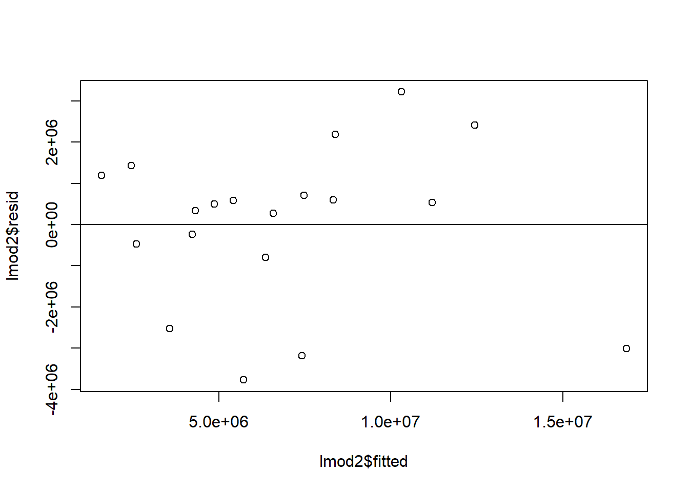
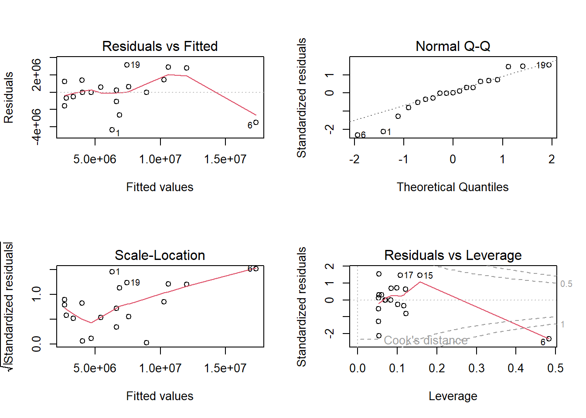
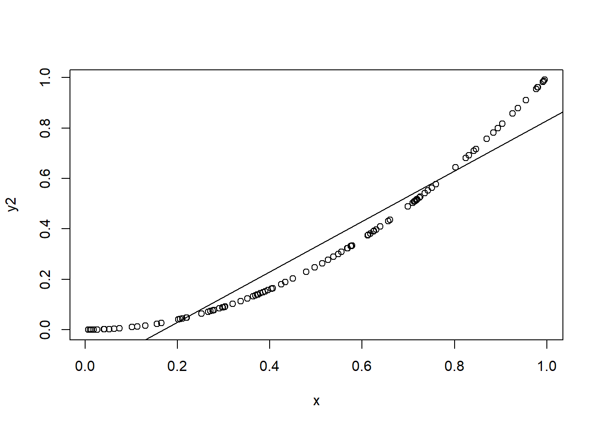

Load the hotel data into R. Here’s a description of the data:
Dataset: hotel_energy.csv
Source: Y. Xin, S. Lu, N. Zhu, W. Wu (2012). “Energy Consumption Quota of Four and Five Star Luxury Hotels Buildings in Hainan Province, China,” Energy and Buildings, Vol. 45, pp. 250-256.
Description: Energy Consumption and attributes for 19 Luxury Hotels.
Variables/Labels:
Hotel Id (hotel)
Energy Consumption in Kilowatt-hours
Area in square meters (area)
Age in years (age)
Number of guestrooms (numrooms)
Occupancy Rate in percent (occrate)
Effective number of guestrooms (effrooms = numrooms*occrate/100)
(a) Perform simple linear regression using energy consumption as the response and area as the predictor. Report a summary of your model.
hotel =read.table("https://www.colorado.edu/amath/sites/default/files/attached-files/hotel_0.txt", sep =",", header =TRUE)head(hotel)
hotel enrgcons area age numrooms occrate effrooms
1 1 1953916 43000 6 420 NA 136.92
2 2 1045555 19979 16 215 NA 135.45
3 3 4245313 46529 7 273 NA 177.59
4 4 2126199 20962 6 222 NA 156.51
5 5 2785958 24212 5 474 NA 330.38
6 6 13833968 112200 4 787 NA 385.39
lmod =lm(enrgcons ~ area, data = hotel)summary(lmod)
Call:
lm(formula = enrgcons ~ area, data = hotel)
Residuals:
Min 1Q Median 3Q Max
-4355890 -872098 1538 1305292 3148838
Coefficients:
Estimate Std. Error t value Pr(>|t|)
(Intercept) -538035.42 1085087.38 -0.496 0.626
area 159.25 20.96 7.599 7.29e-07 ***
---
Signif. codes: 0 '***' 0.001 '**' 0.01 '*' 0.05 '.' 0.1 ' ' 1
Residual standard error: 2102000 on 17 degrees of freedom
Multiple R-squared: 0.7726, Adjusted R-squared: 0.7592
F-statistic: 57.75 on 1 and 17 DF, p-value: 7.294e-07
(b) Is the slope coefficient significant at the α = 0.05 level?
The p-value for the t-test associated with the slope coefficient is smaller than any reasonable \(\alpha\). So, yes, the slope term is statistically significant.
(c) Interpret the slope coefficient in terms of the data.
Assuming that the model is correct, increasing a hotel’s area by one square meter increases its energy consumption, on average, by 159.25 Kilowatt-hours.
(d) What percentage of the variability in energy consumption is explained by area?
Assuming the model is correct, about 77% of the variability in energy consumption is explained by area, assuming the model is correct. (This is the coefficient of determination, or, \(R^2\)).
(e) Now perform multiple linear regression with number of guest rooms, area, and age as predictors (same response). Report a summary of your model. Interpret the coefficient associated with area. Is it different from the SLR model?
lmod2 =lm(enrgcons ~ area + numrooms + age, data = hotel)summary(lmod2)
Call:
lm(formula = enrgcons ~ area + numrooms + age, data = hotel)
Residuals:
Min 1Q Median 3Q Max
-3767734 -638009 492081 949224 3214282
Coefficients:
Estimate Std. Error t value Pr(>|t|)
(Intercept) -828513.80 1958786.74 -0.423 0.678316
area 196.19 40.34 4.863 0.000207 ***
numrooms -6087.90 6500.87 -0.936 0.363863
age 111834.20 133440.71 0.838 0.415140
---
Signif. codes: 0 '***' 0.001 '**' 0.01 '*' 0.05 '.' 0.1 ' ' 1
Residual standard error: 2112000 on 15 degrees of freedom
Multiple R-squared: 0.7974, Adjusted R-squared: 0.7569
F-statistic: 19.68 on 3 and 15 DF, p-value: 1.853e-05
When adjusting for age, and the number of rooms, increasing a hotel’s area by one square meter increases its energy consumption, on average, by 196.19 Kilowatt-hours.
(f) Plot the residuals against the fitted values (for the MLR model). Does this plot suggest that any regression assumptions are violated?
plot(lmod2$fitted, lmod2$resid); abline(0,0)

par(mfrow =c(2,2)); plot(lmod)

It’s a bit hard to tell just from this plot whether any assumptions are violated. There doesn’t seem to be any clear curvature to the plot (which would indicate a missing predictor or a violation of linearity) or some sort of “trumpet” pattern, which would indicate a violation of the constant variance assumption.
(g) Interpret the coefficient associated with the number of guest rooms. Is there anything that seems odd about this interpretation?
The energy consumption, on average, goes down by 6087.90 Kwh, when adding a room, for a constant area and age. This might seem odd at first, but since the regression adjusts for area, it makes some sense: more rooms in the same area might make for a more efficient use of energy. Also, note that the p-value associated with this coefficient is large, and so we might be justified in leavning this predictor out of the model.
(h) Perform a formal test to decide whether the MLR model is necessary, or whether the SLR model will do. Interpret the results.
anova(lmod2, lmod)
Analysis of Variance Table
Model 1: enrgcons ~ area + numrooms + age
Model 2: enrgcons ~ area
Res.Df RSS Df Sum of Sq F Pr(>F)
1 15 6.6931e+13
2 17 7.5129e+13 -2 -8.1987e+12 0.9187 0.4204
The F-test performed above suggests that the reduced model is sufficient (i.e., the p-value, 0.4203536, is high, and we can’t reject the null that the reduced model is sufficient).
Interpretations of \(R^2\)
In this question, we’ll consider how \(R^2\) might be misinterpreted.
(a) Randomly choose \(n = 100\)\(x\) values between zero and one. Then, simulate \(Y\) data such that \(Y_i = 1 + 2X_i + \varepsilon_i\), where \(\varepsilon_i \sim N(0,25)\). Fit a linear regression model in R and report \(R^2\).
n =100; x =runif(n,0,1); y =1+2*x +rnorm(n, 0, 5)lmod =lm(y~x); summary(lmod)
Call:
lm(formula = y ~ x)
Residuals:
Min 1Q Median 3Q Max
-13.1943 -2.3569 -0.0995 2.5025 9.9083
Coefficients:
Estimate Std. Error t value Pr(>|t|)
(Intercept) -0.4858 0.9374 -0.518 0.6054
x 4.4518 1.5815 2.815 0.0059 **
---
Signif. codes: 0 '***' 0.001 '**' 0.01 '*' 0.05 '.' 0.1 ' ' 1
Residual standard error: 4.295 on 98 degrees of freedom
Multiple R-squared: 0.0748, Adjusted R-squared: 0.06536
F-statistic: 7.923 on 1 and 98 DF, p-value: 0.005899
(b) True or False: A simple linear regression model may be correct (i.e., it represents the way that the data were generated) but \(R^2 \approx 0\).
True. Above, \(R^2 = 0.01366\), but the model is correct, i.e., the true relationship between \(X\) and \(Y\) is linear.
(c) Now use the values from part (a), and let \(y = x^2\). So, \(y\) and \(x\) are perfectly related, but not linearly. Fit a simple linear regression model in R and report \(R^2\).
y2 = x^2lmod2 =lm(y2 ~ x)summary(lmod2)
Call:
lm(formula = y2 ~ x)
Residuals:
Min 1Q Median 3Q Max
-0.07372 -0.05127 -0.03093 0.05064 0.19594
Coefficients:
Estimate Std. Error t value Pr(>|t|)
(Intercept) -0.20309 0.01520 -13.36 <2e-16 ***
x 1.05230 0.02565 41.03 <2e-16 ***
---
Signif. codes: 0 '***' 0.001 '**' 0.01 '*' 0.05 '.' 0.1 ' ' 1
Residual standard error: 0.06965 on 98 degrees of freedom
Multiple R-squared: 0.945, Adjusted R-squared: 0.9444
F-statistic: 1683 on 1 and 98 DF, p-value: < 2.2e-16
plot(x,y2); abline(lmod2)

(d) True or False: A simple linear regression model may be incorrect (i.e., it does not represent the way that the data were generated) but \(R^2 \approx 1\).
True. In part (c), the model is clearly incorrect, but \(R^2\) is close to one.